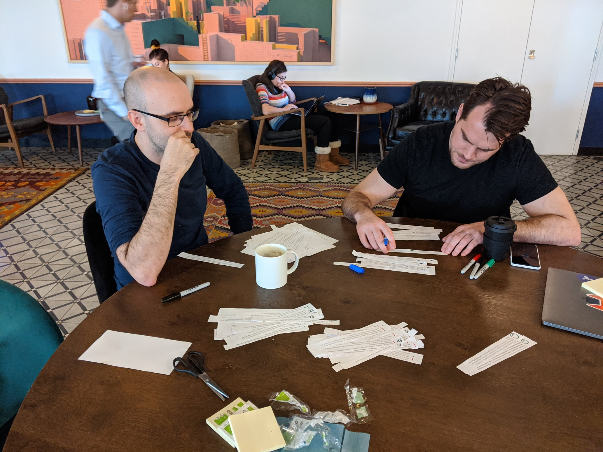

Yapily
2020, United Kingdom. Yapily
About Yapily
Open Banking gives controls to the customer about their finances and helps to push the market forward by increasing competition. Now more companies (TPPs), not only banks, can access customers financial data and with their consent provide new tools and experiences. Yapily helps to create, normalise and maintain the connections between banks and TPPs.
My Role at Yapily
Working closely with existing Product, Development and Marketing teams, to establish and promote best practices in design and elevate UX standards within Yapily. I owned all front-end design, including user dashboards, websites, etc. Worked closely with the Product team to understand the developer user and their experience in building interfaces and their user journeys for effortlessly adopting our API products. Ensuring the user needs and design are the forefront of our product decisions.
Challenges
One of the biggest challenges about Yapily is that the developers considered themselves to be the "end-user of Yapily". This created "solutions" that were good enough for us but were really hard to use and understand for our customers. In this logic, whatever was good for our developers was good for our clients too. Yapily knew very little about their customer's needs, goals and needs. The second challenge was the user interfaces & brand inconsistency. All UIs looked as it belonged to a different company.
How I tackled the "lack of knowledge about our customers"
I performed a series of Customer Interviews with our product managers and share them with the wider team. Later a cluster of knowledge and organised workshops to find solutions.
Also ran usability testing session to understand the problems with the current UX.
This helped Yapily understanding that our customers had different needs and goals than ours. One of the main learnings was that the key reasons for our customers to hire Yapily was to avoid spending too much time customising/maintaining integrations with banks but to have a "tpp-to-many-banks out-of-the-box" connection so they could invest that time building their product.  Other findings:- Banks not providing consistent transaction ID and us not communicating discrepancies creates extra work and confusion
- Missing information about what does an integration provides, what has been tested and what the differences within banks are painful and not well communicated.
- Being an agent of Yapily is slow, manual and you feel blind
- Registering with banks and certificates is complex and not well documented
- Testing (to see what works and what’s provided) is time-consuming and distracting
How I tackled the "brand & UI inconsistency"
I created Yapily design system and Yapily brand & design principles.